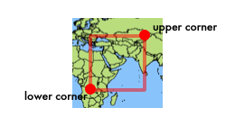

Figure 1. - GeoRSS Model
Figure 1. - GeoRSS Model
Figure 1 shows the UML model for GeoRSS. The left side of Figure 1 represents GeoRSS, the right side represents the "external" content that GeoRSS is being used to describe. In the model, where is an association of a geometry to some content. GeoRSS places no constraint on the type of content, nor on its format.
GeoRSS itself is identified by a namespace, indicated by "georss:". The model above does not show, but allows, the inclusion of any other elements from other namespaces.
The model itself is an abstract concept. In order to use the model, it must be expressed in a concrete form such as XML, RDF, etc. These expressions are called serializations.
By allowing for the definition of multiple serializations, all of which conform to the model, GeoRSS will provide the means of relating one serialization to another. The goal is to also map the model to existing serializations where possible.
The core concepts of GeoRSS are explained below. These concepts are then encoded or serialized in XML for use with Atom or RSS 2.0. Alternate serializations such as in RDF and XHTML are also being developed.
There aren't real grid lines or axes on the earth, so any GeoRSS coordinates must refer to a coordinate reference system which has been defined and agreed to by geodesists and software makers alike. The GeoRSS CRS is the global (and GPS-preferred) WGS84, latitude, longitude (in that order), using decimal degrees. Note that GeoRSS lines and boundaries are allowed to do things like cross the dateline or circle the poles.
The geometric shapes which can be used to represent location in GeoRSS are point, line, and boundary.
A point contains a single coordinate pair. The coordinate pair contains a latitude value and a longitude value in that order. The preferred serialization of this uses a space to separate the two values.
A line contains two or more coordinate pairs. Each pair contains a latitude value and a longitude value in that order. The preferred serialization of this uses a space to separate the two values. Pairs are separated from each other by a space.
A box contains exactly two coordinate pairs. Each pair contains a latitude value and a longitude value in that order. The preferred serialization of this uses a space to separate the two values. Pairs are separated from each other by a space. The first coordinate pair (lower corner) must be a point further west and south of the second coordinate pair (upper corner) and the box is always interpreted as not containing the 180 (or -180) degree longitude line other than on its boundary and not containing the North or South pole other than on its boundary. A box is generally used to roughlydemarcate an area within which other data lie.

A polygon contains at least four coordinate pairs. Each pair contains a latitude value and a longitude value in that order. The preferred serialization of this uses a space to separate the two values. Pairs are separated from each other by a space. The last coordinate pair must be identical to the first.

Figure 2. - 179 degree rule
Due to the fact that the Earth is round, we have to place some constraints on the geometries to avoid ambiguous shapes. In order to be able to easily represent the red box in Figure 2, where the left side of the box is at 160 degrees longitude and the right side of the box is at -175 degrees, no two points in a line or polygon may have latitude values that are more than 179 degrees apart. This constraint avoids other approaches that require either additional information about the topology of the geometry or preclude the ability to represen geometries such as this. Since topology is beyond the scope of this specification, it should not matter that you may have to add an extra point into your geometries. Line and polygon MUST follow this rule. Box does not.
GeoRSS geometry is meant to represent a real feature of the Earth's surface. The GeoRSS model allows for a single string containing a featuretypetag. No constraints are placed on this string. The intent is to allow a Feature Type folksonomy to emerge. The default is "location".
GeoRSS is a way of relating Web content to Earth features. The GeoRSS model allows for a single string containing a relationshiptag. No constraints are placed on this string. The intent is to allow a relationship folksonomy to emerge.The default relationship, "is-located-at" simply indicates that the subject of the content is located at the GeoRSS feature.
In order to provide a means of expressing an elevation, the Simple form of GeoRSS has two special tags. These tags are not meant to be used in the GML version since elevation values would be properly expressed based in more precise terms. The tags are elev and floor.
elev is meant to contain "common" GPS elevation readings, i.e. height in meters from the WGS84 ellipsoid, which is a reading that should be easy to get from any GPS device.
floor is meant to contain the floor number of a building. In some countries the numbering is different than in other countries, but since we'll know the location of the building, it should be fairly unambiguous.
Next>>